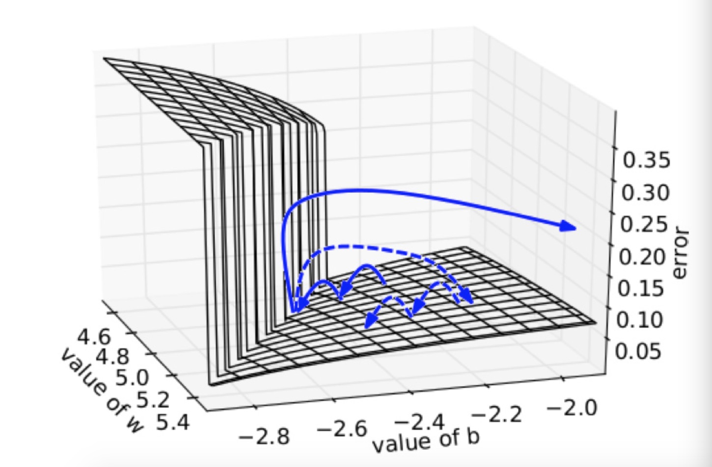
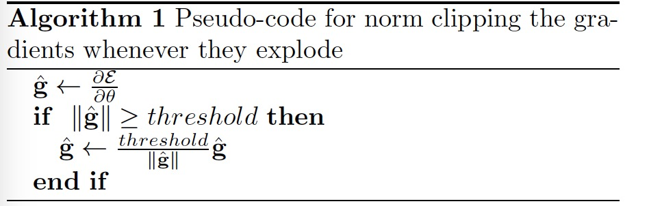
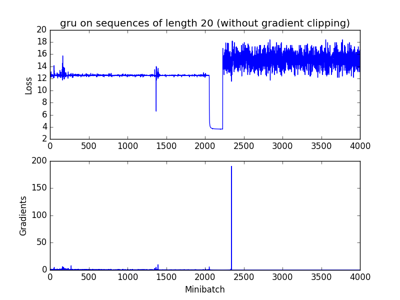
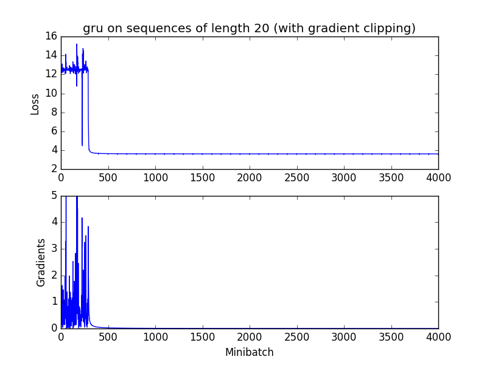

梯度爆炸与梯度消失
sigmoid数学公式: \(f(x)=\frac{1}{1+e^{-x}}\) 值域为[0,1]
sigmoid求导公式： \(f^{\prime}(x)=f(x)(1-f(x))\) 值域为[0,1/4]
实际现象： 当我们使用sigmoid function作为激活函数时，随着神经网络的隐藏层数增加，训练误差反而增大，造成了深度网络的不稳定。
梯度弥散： 靠近输出层的hidden layer 梯度大，参数更新更快，所以很快就会收敛。而靠近输入层的hidden layer梯度小，参数更新慢，几乎和初始状态一样，随机分布。
梯度爆炸： 当前面hidden layer的梯度通过训练变大，而后面的梯度将会指数级增大。
现象原因： sigmoid函数会将[+∞,-∞]的输入压缩到[0,1]，导致当输入更新时，输出的更新会很小。在这种情况下，就会随着隐藏层数的增加，反向传递时，数值更新将会越来越小。
解决方法：
Relu函数代换Sigmoid函数。
逐层贪婪预训练，如同训练自编码器的过程，每次只训练一层参数。由于得到的参数将会是局部最优，所以需要对整个网络再进行调优。
梯度减切Gradient Clip。设置一个梯度减切的阈值，如果在更新梯度的时候，梯度超过这个阈值，则会将其限制在这个范围之内，防止梯度爆炸。
正则。对参数加入正则规范，限制参数范数过大。
加入batch normalization层。
加入残差结构。
LSTM层由于有记忆，可以缓解梯度消失的发生。
Gradient Clip
简述
该方法简单，但是粗暴，阈值人为定义。设置上界阈值，面对梯度爆炸，设置下界阈值，也可以用于梯度消失。 ### 梯度爆炸解释 在一个只有一个隐藏节点的网络中，损失函数和权值w偏置b构成error surface，宛如一堵墙，如下所示  损失函数每次迭代都是每次一小步，但是当遇到这堵墙时，在墙上的某点计算梯度，梯度会瞬间增大，指向某处不理想的位置。如果我们将大梯度缩放，就可以把该梯度的误导控制在可接受范围内，如虚线箭头所示。 ### 算法步骤  1. 设置梯度阈值threshold 2. 求出梯度的L2范数||g||。 3. 比较||g||与threshold的大小。 4. 如果||g||大于threshold,则求threshold/||g||得到缩放因子。 5. 将梯度乘上缩放因子得到最终的梯度。
效果实验
无gradient clip: 模型在2000次迭代出发生了梯度爆炸。 
有gradient clip: 可以发现clip_gradient在前期有效了控制了梯度爆炸的影响，使得最终的loss能下降到满意的结果 
Tensorflow and Pytorch GradientClip
tensorflow
1 | # 1. 计算局部范数（快） |
Pytorch
1 | # 这个函数计算的是全局梯度范数 |
Keras
1 | from keras import optimizers |